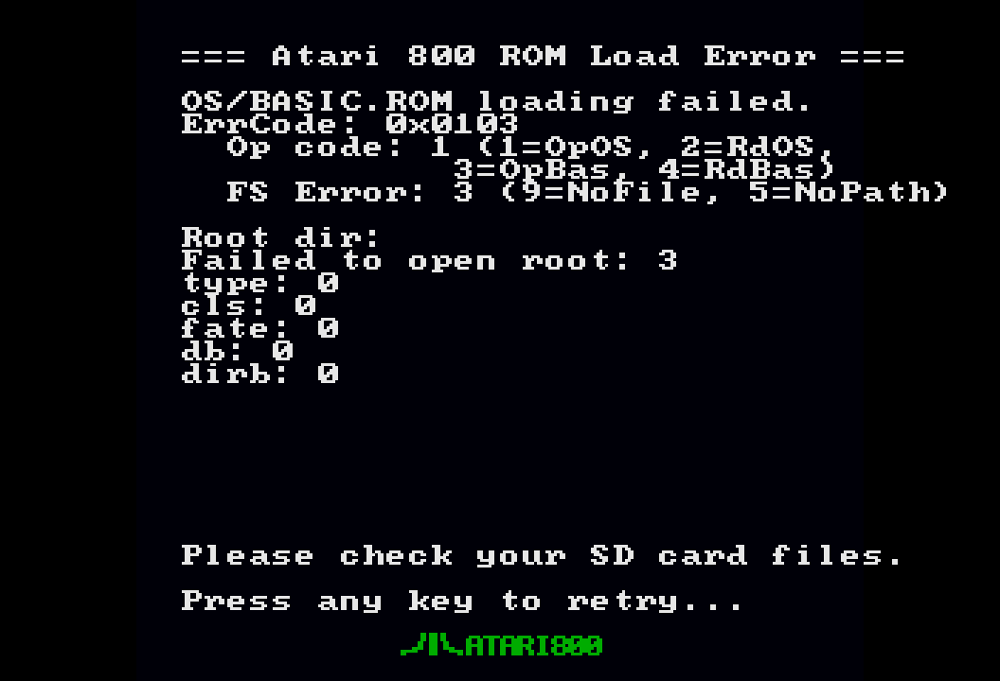

14. Troubleshooting
Find your symptom below; each entry gives the likely cause and what to do.
No picture at power-on (black screen / "no signal")
Symptom: the monitor shows nothing, or reports "no signal", "unsupported" or "out of range" right after power-on.
Likely cause: one of two things.
- On some cold starts the HDMI output may briefly drop and recover by itself while the machine keeps running.
- The display, or something between the board and the display, rejects the non-standard timing (1056×720 declared as 720p). Strict or older displays and pass-through gear — HDMI splitters, AV receivers, capture cards — are the usual culprits.
What to do:
- Wait a moment — a cold-start drop recovers on its own.
- Unplug the USB-C cable and plug it back in (power cycle). Check that LED5 blinks and LED3 comes on solid.
- Connect the board directly to the monitor or TV, without splitters or receivers.
- If the display still refuses the signal, flash the standard-720p v1.1 release instead (higher latency, but fully CEA-standard). See Video.
The Atari does not boot (no BASIC prompt)
Symptom: the screen stays blank or shows the ROM-error screen instead of the BASIC READY prompt; LED3 (pin 18) is off.
Likely cause: the firmware could not read the SD card or could not find the ROM files.
What to do:
- Check that the SD card is FAT32 formatted (32 GB or smaller) and fully inserted.
- Check that
ATARIXL.ROM(exactly 16384 bytes) andBASIC.ROM(exactly 8192 bytes) are in the root directory of the card. Names are case-insensitive; sizes are not negotiable. - Reinsert the card and press S1 or power-cycle the board.
- If the on-screen menu appears by itself at power-on, that is the symptom of a failed ROM load — not normal behaviour.
Remote rescue via the PC Link: the serial bridge answers even at the ROM-error screen. With the board on the USB-C cable, python3 tools/atari.py status names the boot stage and atari.py log shows the stage markers (boot: sd ok → boot: roms 0 → boot: running). You can send the missing ROM files over the cable and press a key to retry. Total serial silence means the machine never reached the firmware at all — power-cycle it. See PC Link.

The machine comes up dead after a reset (v3.2 and later: self-healing)
Symptom: after a power-on, Hard Reset, Boot OS/BASIC, cartridge attach or F9, the screen stays black or stale and the keyboard is dead, while the OSD and the PC Link still answer.
Likely cause: the 6502 was released from reset at an unlucky moment and never started. Up to v3.1.2 this happened about once in fifteen resets. Since v3.2 the reset release is synchronised to the core clock, which removed it in testing, and a firmware watchdog covers any remaining case: if the OS has not started 2.5 s after the release, the same reset is repeated automatically (the serial log shows boot: watchdog retry N, and the status line's br: field counts retries).
What to do: nothing on v3.2; if you ever see it stay dead for more than a few seconds, report it with the br: value from atari.py status. On older versions, reset again.
The keyboard does nothing
Symptom: the Atari boots to BASIC but typing has no effect, or only some keys work.
Likely cause: wiring or module configuration; or the input is being masked on purpose.
What to do:
- Check the wiring: the module's UART TX must go to pin 53, plus GND to a GND pin and 5V to a 5V pin. Nothing else is needed — no resistors.
- CH9350 module: the DIP switches must select State 0 (Host Mode / Direct Data Transmit) at 115200 baud. Pi Pico: the sketch must send CH9350 frames at 115200 baud, 8N1 (frame format in Hardware setup).
- Close the OSD. While the menu is open, keyboard and joystick input is masked from the Atari so that navigating the menu does not play the game. Press F12 or S2 to return to the Atari.
- If only the arrow keys are dead: the Arrow keys: JOYSTICK mode is on. In that mode ↑ ↓ ← → drive Joystick 1 and are suppressed from the keyboard (Left-Alt is fire). Press F11 to flip back live, or set Arrow keys: NORMAL in OSD → Options. See Options.
- Remember that the mapping is by position: the PC keyboard acts as an Atari keyboard, so some keys are not where their PC legend says. See the table in Keyboard.
The joystick moves by itself / games skip their intros
Symptom: the cursor or player moves without touching the stick, fire seems to be held, games auto-skip intros or cutscenes.
Likely cause: a joystick signal is wired to a pin driven by the on-board BL616 MCU — pins 69–76 or 79 (its UART/HSPI and the WS2812 LED). The BL616 is always on, so those pins carry phantom input.
What to do: re-wire the joystick to the documented pins only — Joystick 1: 27, 28, 25, 26, 29; Joystick 2: 42, 41, 56, 54, 48; GND to any GND pin. Also stay off pin 51 (PLL clock input) and pin 32 (LCD flex connector). See Hardware setup.
Disk errors
Symptom: a write fails with error 144; the drive line in the menu shows (RO); SAVE or FORMAT refuses to work on one drive; a double-density image does not boot.
Likely cause and what to do:
- "(RO)" and error 144 — the image is write-protected. The firmware clears a PC-inherited read-only attribute when it can; when it cannot, the drive shows "(RO)", reports write-protect in its status and writes return error 144, exactly like a protected disk. Clear the read-only attribute on the file from the PC, or use a different image.
- Same image on two drives — mounting the same file on two drives makes the second mount read-only on purpose (two write handles on one file could corrupt the SD card's filesystem). Detach the duplicate, or copy the image under a new name.
- Double-density image will not boot — 256-byte-sector ATRs work in both DD file conventions (packed and full-boot-area) since v2.8, and MyDOS 4.5 images boot. If you run an older release, update.
- Need a writable disk — use the drive menu's New blank disk (90K) to create
BLANKnn.ATRon the card and mount it, then format it from DOS. - Load stuck mid-way — if LED2 goes dark while LED4 keeps flashing, the load is stuck. Try Hard Reset from the OSD.
Details in Disks.
HDMI goes black mid-session and comes back
Symptom: the picture drops out for a moment (the monitor loses sync) and then returns; the sound and the game keep going.
Likely cause: the same cold-start HDMI drop described above — the output may briefly drop and recover while the machine keeps running. It is not a crash: the Atari itself was never interrupted.
What to do: nothing is lost; wait for the picture to return. If it recurs, power-cycle the board so the outputs start fresh.
The PC Link does not answer
Symptom: atari.py ping does not return A8OK; the desktop app cannot connect; no serial port appears.
Likely cause: driver, wrong port, another program holding the port, or a stalled bridge chip.
What to do:
- Install the Python dependency:
pip install pyserial. - Linux: if no
/dev/ttyUSB*appears, load the driver withsudo modprobe ftdi_sio(make it permanent withecho ftdi_sio | sudo tee /etc/modules-load.d/ftdi_sio.conf). Windows gets the FTDI VCP driver through Windows Update. - The board shows up as a pair of serial ports; the second one is the bridge. The tools auto-pick it.
- Only one session can hold the port: close
log,kbdor the desktop app before starting another tool, and close them all before using the Gowin programmer. - If the bridge chip stops answering after a burst of USB traffic, unplug the board's USB cable for ten seconds and plug it back in.
- If the port keeps appearing and disappearing (on Linux,
journalctl -kshowsUSB disconnectlines every second), the USB link is marginal: try another data-capable USB-C cable, and unplug the keyboard from its adapter to see whether the current draw is what tips it over. The board, its keyboard adapter and the bridge chip all draw from the same laptop port. A bad cable produced exactly this while the Atari itself kept running normally. - Complete serial silence, including no reply to
status, means the machine never reached the firmware — power-cycle the board.
See PC Link.
F12 does not open the OSD during a PC session
Symptom: with a live PC Link session engaged (for example atari.py kbd or the desktop app's Live Keys tab), F12 on the physical keyboard sometimes does not open the menu.
Likely cause: a known issue under investigation (see Known issues).
What to do: press the on-board S2 button — it always works. Closing the PC session restores F12 immediately.